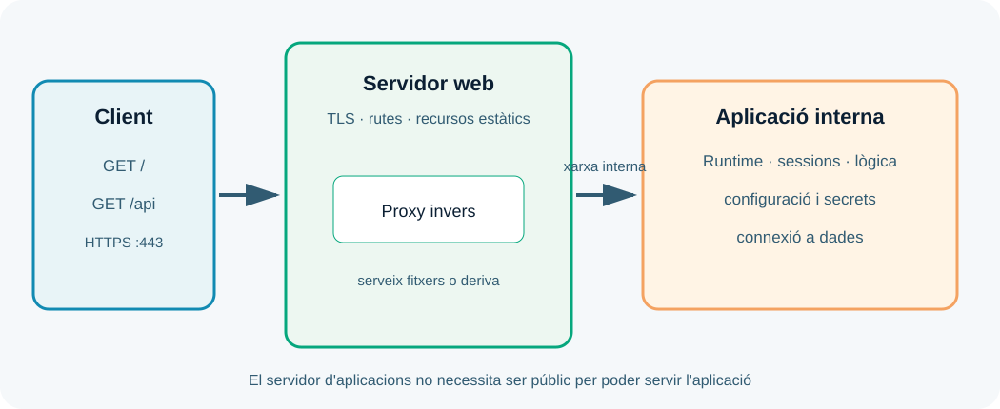

UP3. Administració de servidors d'aplicacions
Presentació
El servidor web pot servir un fitxer, però una aplicació dinàmica necessita executar codi, gestionar sessions, consultar dades i generar respostes. Aquesta UP estudia el servidor d'aplicacions i la cooperació segura amb el servidor web.
Pregunta guia: com despleguem la lògica d'una aplicació perquè siga segura, observable i capaç de respondre amb estabilitat?
Dades i objectius
| Element | Referència |
|---|---|
| Duració de referència | 15 hores al centre |
| Resultat d'aprenentatge | RA3 |
| Pes | 20 % |
| Producte final | Aplicació dinàmica desplegada i verificada |
Hauràs de descriure serveis, fitxers de configuració i biblioteques, connectar el servidor d'aplicacions amb el servidor web, configurar seguretat, fer proves de rendiment i documentar l'administració.
1. El paper del servidor d'aplicacions
El servidor d'aplicacions proporciona el runtime on s'executa la lògica dinàmica. Pot carregar un artefacte, crear processos o workers, gestionar sessions, aplicar dominis de seguretat, obrir connexions a dades i generar contingut.
La forma concreta depén de la plataforma: PHP pot executar-se amb PHP-FPM, una aplicació Python pot usar un servidor WSGI, i una aplicació Java pot desplegar-se en un contenidor o servidor compatible. Els noms canvien, però les preguntes d'administració són les mateixes: què executa, amb quin usuari, amb quina configuració i darrere de quin servidor web?

El servidor web acostuma a ser la frontera pública. El servidor d'aplicacions escolta en una xarxa o port intern i només rep les rutes que necessita. Aquesta separació permet centralitzar TLS, limitar exposició i servir recursos estàtics de manera eficient.
2. Components i configuració
Un desplegament dinàmic sol incloure:
- codi font o artefacte empaquetat;
- runtime i biblioteques;
- fitxers de configuració;
- variables d'entorn;
- connexions a bases de dades o APIs;
- gestor del procés;
- servidor web o proxy invers;
- logs i comprovacions de salut.
La configuració ha d'estar separada del codi quan depén de l'entorn. No escrigues contrasenyes en el repositori ni en les imatges. Usa variables d'entorn o un gestor de secrets i documenta només noms i exemples ficticis.
3. Cooperar amb el servidor web
Quan el servidor web deriva una petició, ha de saber a quin servei intern enviar-la, quins encapçalaments conservar i com tractar un error o un temps d'espera. La configuració ha de distingir recursos estàtics, rutes dinàmiques, càrrega de fitxers i peticions de salut.
Una errada freqüent és crear un bucle de proxy: el servidor web envia a un nom que torna a resoldre contra ell mateix. Una altra és perdre l'esquema original o l'adreça del client perquè no s'han configurat correctament les capçaleres de proxy. Documenta quines capçaleres utilitza l'aplicació i no confies en una capçalera d'identitat que qualsevol client puga injectar directament.
4. Seguretat del servidor d'aplicacions
Executa el servei amb un usuari sense privilegis d'administració i limita l'accés al sistema de fitxers. Protegeix les sessions amb temps d'expiració, cookies adequades i invalidació quan l'usuari tanca sessió. Valida entrades en l'aplicació, limita càrregues i no mostres traces internes al client.
La seguretat també és operativa: fixa versions, actualitza dependències, elimina components que no uses, restringeix els ports i registra errors sense incloure tokens ni dades personals. El servidor d'aplicacions no hauria de ser l'únic lloc on es comprova la identitat: coordina autenticació, autorització i permisos de dades.
5. Desplegament d'un artefacte
Un procés reproduïble pot seguir aquestes fases:
- Construir l'artefacte a partir d'una versió identificada.
- Instal·lar dependències amb versions controlades.
- Injectar configuració de l'entorn sense secrets en el codi.
- Iniciar el procés amb un usuari i límits coneguts.
- Comprovar la ruta de salut i els logs.
- Connectar el servidor web i repetir les proves des del punt de vista del client.
- Registrar la versió desplegada i la manera de recuperar l'anterior.
Evita substituir fitxers directament mentre el servei està en ús si això pot deixar una versió parcial. En entorns més avançats, prepara una nova instància i canvia el trànsit quan les proves siguen correctes.
6. Rendiment i diagnòstic
El rendiment no és només el temps de resposta: inclou errors, consum de CPU i memòria, saturació de connexions, temps de consulta i capacitat de recuperar-se. Defineix una prova, una càrrega i un llindar abans de mesurar.
Per diagnosticar, separa: servidor web, procés d'aplicació, base de dades i xarxa. Compara el temps d'una resposta estàtica amb una dinàmica. Revisa si la petició arriba a l'aplicació, si l'aplicació consulta dades i si el retard es concentra en una dependència.
curl -i http://127.0.0.1:8080/health
curl -w '\nTemps: %{time_total}s\n' -o /dev/null http://127.0.0.1:8080/
Treball semipresencial
Prepara un diagrama, una fitxa de configuració i una matriu de proves. En el laboratori, desplega una aplicació mínima i provoca de forma segura una ruta inexistent o una dependència desconnectada. Explica quina capa ha fallat, quina evidència ho demostra i com recuperaries el servei.
Secrets i dades
No inclogues tokens, cadenes de connexió ni dades personals en captures o repositoris. Usa valors ficticis i fitxers locals exclosos per Git.
Resum de la UP3
El servidor d'aplicacions executa la lògica i gestiona el seu entorn. Un desplegament de qualitat separa la frontera pública de la lògica, protegeix processos i sessions, fixa la configuració, mesura el comportament i deixa una ruta clara de recuperació.